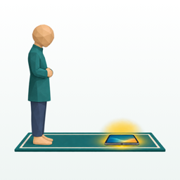

Salah Teacher
Learn to pray, step by step. An iPad app by Folio App Studios.
Salah Teacher is designed for the iPad to lie on your prayer mat. Each page shows the words to say in large type, a picture of the position, and the words light up as you say them.
Getting started
Pick a prayerOn the Pray screen, tap one of today's five prayers, then one of its parts, such as 2 Sunnah or 4 Fard.
Practise firstIn Practise, tap Start and read at your normal pace, tapping Next after each page. The app learns how long each page takes you.
Then prayIn Pray, the pages turn by themselves at your pace, so you never have to touch the screen. Practise again at any time to change the timing.
Common questions
Why does the app ask for my location?Prayer times and the direction of the Qibla depend on where you are. The location is used on your iPad only. If you'd rather not share it, choose your city or type its coordinates on the Times & Qibla screen.
The prayer times look wrongOn Times & Qibla, check your city and the calculation method. Asr follows the method of prayer chosen in Settings (Hanafi or the other three schools).
The pages turn too fast or too slowGo through the prayer again in Practise, or use the − and + buttons while praying to give a page a second less or more.
How do I add Ayat al-Kursi, optional rak'ahs or the four Quls?Open Settings and look under "Beautify your prayer".
The text is too small or too largeChoose the text size in Settings, or tap Aa while praying.
Contact
Questions, feedback or a correction to the text? Email administrator@folioappstudios.com and we'll get back to you.